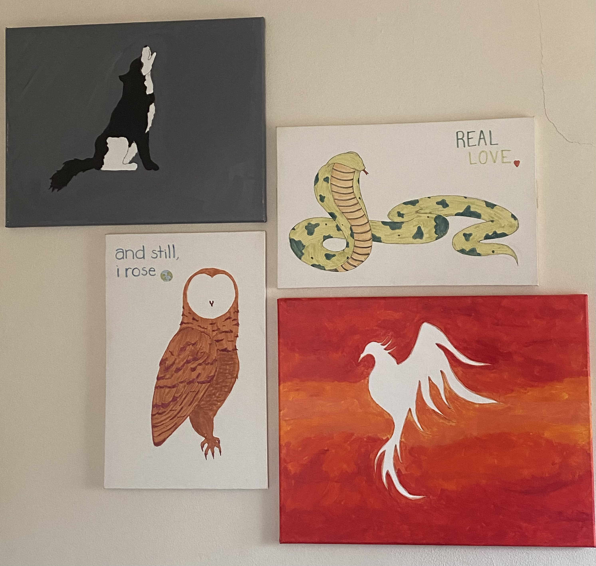

Art is one of the greatest gifts of the universe. They say "beauty is in the eye of the beholder" and so I create and interpret art in the way it impacts my perspective. For instance, I've recently finished a personal artistic project that was inspired by my love for nature along with some introspective observations. Take a look!
| Animal | Sector | Significance | Side Notes |
|---|---|---|---|
| Wolf | Emotional | Deep Loyalty, Solitude, Instict-Trusting. The black and white highlight the ying-yang relationship in this sector whereas the gray represents the "gray area" from external circumstances. | This was the first painting. |
| Cobra | Physical | Sleek Frame, Swift Movement, Protective. Contrary to usual connotation of a snake, the Cobra to me is less about morality and more aligned with its movement in juxtoposition to other animals. | The "Real Love" caption is a nod to a heart-shaped birthmark I have behind my left shoulder. |
| Owl | Mental | Observant, Independent Thinking, Esoteric Curiousity. Most owls are nocturnal, meaning they become active when the sun is down. No I'm not nocturnal but I do some of my deepest, most reflective thinking in the nighttime. | The "and still I rose" caption is a nod to both Maya Angelou's 'Still I Rise' poem and the song "Interlude by J Cole" (the song that was playing as I was drawing) where he references her poem. |
| Phoenix | Spiritual | Rebirth, Renaissance, Regeneration. All around the Phoenix is a chamber of burning flames and ether. No matter how much tension builds up in the prior sectors, self knowledge and awareness allows me to return evolved. | The same flames that are made to destroy the bird, are simultaneously the catalyst for its development. |